Speakers

Ibrar Ahmed, Principal Engineer at pgEdge, brings 25 years of experience in software design and open-source development, particularly PostgreSQL. With a strong background in system-level embedded development, Ibrar has made impactful contributions during his tenure at companies like EnterpriseDB, Percona, and Bitnine. Since 2006, he's been instrumental in enhancing PostgreSQL's core engine, driving performance improvements, and refining essential modules.
His expertise spans MySQL,...
Hamid worked extensively on PostgreSQL for more than 12+ years now. As an architect and developer, he's working on multi-active solution with pgEdge, In the past, he's also worked on transparent data encryption, the observability extension (pg_stat_monitor), ORC FDW, and an auto-tuner for PostgreSQL. He has also managed the official PostgreSQL installers.
At pgEdge, Hamid contributes to developing the Spock extension, enabling active-active...
Roller Angel spends most of his time helping people learn how to accomplish their goals using technology. He's an avid FreeBSD Systems Administrator and Pythonista who enjoys learning all the amazing things that can be done with Open Source technology, namely FreeBSD and Python, to solve issues. He's a firm believer that one can learn anything they wish to set their mind to. He uses Configuration Management software on FreeBSD written in Python every day as part of his job as a...

Kenny has worked with UNIX-like operating systems since his introduction to them while serving in the U.S. military in the late 1990s. Kenny has been involved with the Linux community in various capacities such as teaching Linux for a variety of training organizations, deploying Linux in local government institutions up to large Universities, as well as in various large-scale businesses. Kenny enjoys working with open platforms and finding potential new uses for them in a variety of...
JJ works at IBM on the IBM cloud as a Developer Advocate. He’s focusing on the IBM Kubernetes Service trying to make companies and users have a successful on boarding to the Cloud Native ecosystem.
He lives and grew up in Austin, Texas. He enjoys a good strong stout, hoppy IPA, and some team building Artemis, madding Dwarf Fortress or Rimworld or possibly pair programming cluster Factorio. He’s a member of the Church of Emacs, though jumps into Vim on remote machines. He usually...
Tarus Balog has been involved in managing communications networks professionally since 1988, and unprofessionally since 1978 when he got his first computer - a TRS-80 from Radio Shack. After being kicked out of some of the best colleges in the country, and a short stint in telecom, he founded an open source-focused company and ran it for twenty years. Once that company was sold, he started working at Amazon Web Services with the goal of making AWS the most welcoming place to run open source...
Adam Gordon Bell has a popular podcast on software development. He formerly worked for Tenable on cloud security and container security products. He is now a developer advocate for the open-source build tool Earthly. He also spends a lot of time writing about software development.
Ramiro Berrelleza is one of the founders of Okteto. He has spent most of his career (and his free time) building cloud services and developer tools. Before starting Okteto, Ramiro was an Architect at Atlassian and a Software Engineer at Microsoft Azure. Originally from Mexico, he currently lives in the Bay Area.
Camilla is a classical musician turned software engineer based in Los Angeles. Born and raised in Perugia, Italy, in her previous career as a professional violist she performed with symphonies across the United States. During the pandemic, her curiosity for learning led her to explore programming. She just graduated from Ada Developers Academy, an 11-month highly selective fullstack bootcamp for women and non-binary people. Camilla is currently a CrowdStrike Cloud Engineering Intern, working...
Ryan is an Advocate at Redgate focusing on PostgreSQL. Ryan has been working as a PostgreSQL advocate, developer, DBA and product manager for more than 20 years, primarily working with time-series data on PostgreSQL and the Microsoft Data Platform.
Ryan is a long-time DBA, starting with MySQL and Postgres in the late 90s. He spent more than 15 years working with SQL Server before returning to PostgreSQL full-time in 2018. He’s at the top of his game when he's learning something...
Hello! I am a current junior at Port of Los Angeles High, just trying to explore different careers in tech. I play video games, sing, play a variety of sports, and love building.
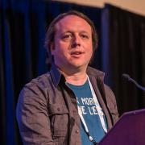
Yannick is a versatile computer engineer working mostly on open source projects. Recently, he has been helping the Chaire Mobilite lab at Polytechnique Montreal opening the code of their Transition plateform and working on their backend infrastructure. He has also teached embedded software development using OSS tools. And in his spare time, he's helping startups figure out their software development and infrastructure needs. Previously, he was a Production Engineer and Hardware System...
After a couple decades on-call, Karen has developed a phobia of not getting enough sleep. She spends her spare time rendering puns in yarn, solving bizarre twisty puzzle cubes, and tripping over cats.
Karen also has a blog, where she shares techniques, stories, and rants about Site Reliability, DevOps, and other stuff.
Borja Burgos is a DevEx-obsessed entrepreneur and technologist. In 2013, he co-founded Tutum – a platform for developers to build and run their Docker applications. After Tutum's acquisition by Docker in 2015, Borja relentlessly continued working on new tools and services to delight developers, from their local desktops to their cloud environments. Disappointed with the complexity and lack of visibility in modern-day testing and continuous integration workflows, he left Docker to co-...
Donald Burr has been using — and abusing — computers and gadgets practically since the day he was born. (Rumor has it he was born with a keyboard in one hand and a mouse in the other.) He has been involved in the Open Source community in various capacities for most of his adult life, and regularly advocates for the use of Linux and Open Source software to his various employers. Lately he's become enthused with mobile app development. When he’s not geeking around with tech, he can be...
Bryan Cantrill is a software engineer who has spent a quarter of a century at the hardware/software interface. He is the co-founder and CTO of Oxide Computer Company, which is endeavoring to build a rack-scale computer for the post-cloud era. Prior to Oxide he spent nearly a decade at Joyent, a cloud computing pioneer; prior to Joyent, he spent fourteen years at Sun Microsystems, a now-defunct computer company that Bryan's ten-year-old daughter apparently thought was a brewery.
Leigh is building Flox and is active with the Kubernetes and Flux projects.
He has a background in infrastructure software with a security niche.
He authored Flux 2's security model and kubeadm's mTLS implementation and is currently working on Kubernetes authorization with SIG Auth.
Leigh and his wife love to snowboard in Colorado and have 3 dogs.

Colin Charles is the Managing Consultant at GrokOpen. Previously, Colin was on the founding team of MariaDB Server, and has been around the MySQL ecosystem including being an early employee at MySQL, and worked actively on the Fedora and OpenOffice.org projects. Colin has been a MySQL user since 2000. He's well known within open source communities, enjoys building business and market entry in APAC and has spoken at many conferences.
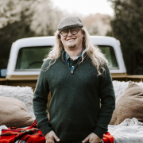
David has been working with PostgreSQL for around 20 years, since version 6.5. He is a committer to the Bucardo project (a multi-primary database replication solution), and has consulted on PostgreSQL databases for close to 15 years.
Elizabeth is a Customer Success Manager at Crunchy Data and volunteers for the United States PostgreSQL Association (PgUS). Elizabeth enjoys writing about Postgres for Newbies and teaching people about databases whenever she gets the chance. She has a background in open source project management and enjoys working with development teams to build products and applications using all the fun things in the open source toy box. Elizabeth hails from Lawrence, Kansas and spends most of her free...
Michael Coté studies how large organizations get better at building software to run better and grow their business. His books Changing Mindsets, Monolithic Transformation, and The Business Bottleneck cover these topics. He’s been an industry analyst at RedMonk and 451 Research, done corporate strategy and M&A, and was a programmer. He also co-hosts several podcasts, including Software Defined Talk. Cf. cote.io, and is @cote in Twitter. Texas Forever!
Caroline Coward supervises the daily operations of the Library at NASA’s Jet Propulsion Laboratory, collaborating with and supporting the work of scientists, engineers, and mission specialists across the organization in areas such as internal and external information curation, ML/AI technology initiatives, and data governance and strategy. Caroline holds a Master of Library and Information Science degree from San Jose State University, and she spent the majority of her over 30-year career as...

Since the age of 10 I’ve always been passionate about computers. I’ve been working with them ever since. In 2005 I got my degree in computer science. I used to work at a major Belgian university where I was developing the e-learning applications. In that position, I was the one who looked after the databases. From there on I grew to be their MySQL DBA. In 2017 I left the university and joined Pythian as a MySQL Database Consultant. Currently I am working at PlanetScale to support large...
Matt was once a Docker enthusiast, but was accidentally captivated by Nix and functional programming whilst working for an Embedded Linux company who were using Yocto + Docker for building and deploying software (tools which are exactly the opposite of functional and reproducible!). Since discovering Nix, Matt has quit his job and become a passionate NixOS contributor, evangelist and founder of Nix.How LTD, a Nix Software Consultancy that focuses on converting clients from legacy,...
Jon A. Cruz is a professional developer with over 20 years of experience, working extensively in multimedia, including programming and 3D art creation, and has developed for a wide variety of platforms. Work includes R&D for mobile and other devices, servers for large mail and messaging systems, enterprise security applications, and user interface design and development..
He had participated as a mentor in Google's Summer of Code since its first year with Inkscape and...

Paige Cruz is a Senior Developer Advocate at Chronosphere passionate about cultivating sustainable on-call practices and bringing folks their aha moment with observability. She started as a software engineer at New Relic before switching to Site Reliability Engineering holding the pager for InVision, Lightstep, and Weedmaps. Off-the-clock you can find her spinning yarn, swooning over alpacas, or watching trash TV on Bravo.

Just as at home with electro-acoustic synthesizer electronics as with site reliability engineering, I find joy in operating inherently chaotic complex systems. My expertise is a variegation of data-center operations, storage hardware, distributed databases, IT security, support services, observability systems, education, advocacy, and SRE leadership. With degrees in music performance and composition, I have a passion for exploring relationships between the artistic mind and the operation of...
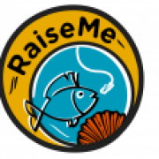
Remy DeCausemaker is the Open Source Lead for the Digital Service at the Centers for Medicare & Medicaid Services (CMS.) Remy supports a community of developers, designers, and other contributors to create accessible healthcare technology through collaboration. Through his work with the Digital Service, Remy helps improve access to health Information, and grow communities of practice around Open Data, Open Standards, and Open Source code.
Remy comes to CMS with over a decade of...

Frédéric Desbiens manages IoT and Edge Computing programs at the Eclipse Foundation. His job is to help the community innovate by bringing devices and software together. He is a strong supporter of open source. He worked as a product manager, solutions architect, and developer for companies as diverse as Pivotal, Cisco, and Oracle. Frédéric holds an MBA in electronic commerce, a BASc in Computer Science, and a BEd, all from Université Laval.
In the past, Frédéric spoke at several...
Chelsea Dole is a Senior Software Engineer at Brex, a fintech startup providing B2B credit access and expense management software.
As an engineer on the Data Storage team, she builds Postgres infrastructure at scale, performs query optimization, and seeks to up-level organizational understanding of databases.
Chelsea is active within the Postgres and Python communities, and has presented talks about cloud computing, data storage, and Python.
Cali Dolfi is a Data Scientist in the Open Source Program Office at Red Hat. Her work focuses on changing the way we look at open source communities through the lens of data science and machine learning. Outside of data science, her passion lies in making careers in technology more accessible for underrepresented groups by mentoring college students and developing accessible academic resources.
Cali is a recent graduate of Boston University where she was a Teachers Fellow, collegiate...
Chris Down is an engineer on the Meta kernel team, primarily working on cgroups and overall memory management strategy. He is responsible for debugging and resolving major production issues and improving the reliability and efficiency of Meta's systems, and is also a maintainer of systemd.
Vino is a developer advocate at lakeFS, an open-source platform that delivers git-like experience to object store based data lakes.
she started as a software engineer at NetApp, and worked on data management applications for NetApp data centers when on-prem data centers were still a cool thing. She then hopped onto cloud and big data world and landed at the data teams of Nike and Apple. There she worked mainly on batch processing workloads as a data engineer, built custom NLP models...
Annabel Lee Enriquez is a Project Specialist at the Getty Conservation Institute, where she has specialized in cultural heritage documentation and technology projects since 2013. She manages data modeling and knowledge organization strategy for the Arches project, an open-source software platform for integrated cultural heritage data management. She also provides community training and guidance on Arches and data-related topics, and works directly with GCI partners to better facilitate their...
John Fastabend is the creator of Tetragon and current project lead as well as a Cilium maintainer. He is a long time kernel contributor and maintainer working on BPF from the early days of its creation and is the listed maintainer for various networking subsystems and drivers. He is currently having fun applying eBPF at Isovalent to solve cloud-native security and observability problems with Tetragon.

I am Jay Faulkner, an Open Source Developer and Advocate. I believe that through working with others around the world to solve problems we can make the world better. Open source is a great way to do that.
I have a long and varied contribution history in and around open source, including:
- Over a decade contributing to OpenStack, including two terms on the Technical Committee
- Over a decade as a core reviewer, and three-time PTL, on OpenStack Ironic
- Gentoo...
Kaslin Fields is a Developer Advocate at Google Cloud, a Cloud Native Computing Foundation (CNCF) Ambassador, and a contributor to Open Source Kubernetes. As a Developer Advocate, she engages with Open Source and technical practitioner communities both as a member, and as an advocate for their needs in the development of Google Cloud's products. She is passionate about making technology accessible to a broad audience through creating content in many forms, such as videos, blogs,...
Senior Database Engineer with Crunchy Data Solutions. Author of several popular 3rd-party PostgreSQL tools such as pg_partman, mimeo, & pg_extractor
Based in Chicago and a natural creature of winter, you can typically find me sipping Grand Mayan Extra Anejo whilst simultaneously defending my systems using OSS, magic spells and Dancing Flamingos. Honeypots & Refrigerators are a few of my favorite things! Fun Fact: I rescue Feral Pop Tarts and have the only Pop Tart Sanctuary in the Chicago area.
Kat Gaines leads developer relations at PagerDuty. She enjoys talking and thinking about incident response, customer support, and automating the creation of a delightful end-user and employee experience. She previously ran Global Customer Support at PagerDuty, and as a result it’s hard to get her to stop talking about the potential career paths for tech support professionals. In her spare time, Kat is a mediocre plant parent and a slightly less mediocre pet parent to two rabbits, Lupin and...

Justin is a engineer building communities and solutions.
Logan is in 5th grade and loves Minecraft, reading, and creating videos. He likes to build and explore new things and has been creating animations, stop motion, and live videos ever since he could use a camera.
Rob Gaston is a software developer presently working as at Farallon Geographics in San Francisco, CA. He's a team member on the Arches project, and sometimes he helps people learn web development skills by teaching classes, which he has done for General Assembly and BayGeo.
Peter has been involved in PostgreSQL development since 2011 as both a reviewer and feature implementer, and is a major contributor and committer. He has worked on all areas of the codebase, with a recent focus on the standard B-Tree index access method, as well as VACUUM.
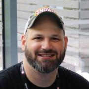
Carl George leads the Extra Packages for Enterprise Linux (EPEL) team in the Community Linux Engineering group at Red Hat. He participates in many open source projects, often related to his packaging activities in Fedora, EPEL, and CentOS. He is a member of the EPEL Steering Committee, the Fedora Packaging Committee, and various Fedora Special Interest Groups.
Technology and Product Leader with a strong experience in Networking, Security and Cloud-Native Applications.
Currently focused on Container Security, Kubernetes, and Service Meshes.
With over 28 years of experience in leading-edge technology, Dan has held developer and lead roles at various companies in Silicon Valley. He has been with AWS for over 3 1/2 years working in the IoT space to help reduce friction and accelerate time to market for builders. Focused on FreeRTOS and embedded devices interacting with cloud services, Dan is passionate about delivering a great developer experience for IoT.

Kenny started using MySQL in the early 2000's as DBA/Systems Engineer, spent 8 years at Percona as MySQL Consultant/Architect & Practice Manager and is currently MySQL Product Management Director at Oracle.
I’started using Linux in 1996, and PostgreSQL in 1998. Love to travel, listen to music, and enjoy life with friends. Joined PostgreSQL community around 1999. Currently maintaining PostgreSQL official RPM repository at https://yum.postgresql.org and https://zypp.postgresql.org . Contributed to many PostgreSQL related projects. Already a Fedora and EPEL contributor as well.
Working at EDB as Postgres...
Arun Gupta is vice president and general manager of Open Ecosystem Initiatives at Intel Corporation. An open source strategist, advocate, and practitioner for nearly two decades, Arun has taken companies such as Apple, Amazon, and Sun Microsystems through systemic changes to embrace open source principles by contributing and collaborating effectively.
As an elected chair of the Cloud Native Computing Foundation (CNCF) Governing Board, Arun works with CNCF leadership and member...

Chanchal is a founding member of the Site Reliability Engineering (SRE) team at Edmunds. He loves solving complex problems using technology and data. He enjoys traveling, nature, and hiking in national parks.

Michael Hackett is a storage and SAN expert in customer support. He has been working on Ceph and storage-related products for over 12 years. Apart from this, he holds several storage and SAN-based certifications and prides himself on his ability to troubleshoot and adapt to new complex issues. Michael is currently working at Red Hat, based in Massachusetts, where he is a principal software maintenance engineer for Red Hat Ceph and the technical product lead for the global Ceph team. Michael...

Magnus Hagander is a member of the PostgreSQL Core Team and a developer and code committer in the PostgreSQL Global Development Group.
Magnus is one of the original developers of the Windows port of PostgreSQL. These days, he mostly works on other parts of the PostgreSQL backend, recently with a focus on security features, monitoring and backup/replication interfaces and tools.
He is also one of the core members of the postgresql.org infrastructure team, maintaining the servers...

Nathan is a Site Reliability at Reddit, where he works to architect highly scalable and reliable systems that can be efficiently managed and observed. He has been involved with the open source community for nearly two decades, primarily through his roles as an Ubuntu and Debian GNU/Linux Developer and a member of the freenode IRC staff. Previously, he worked as a Developer Advocate/Software Engineer at Orchid Labs building an open marketplace for bandwidth on Ethereum, and as a Site...

Sam Hanna is a medical technician at Abbott Labs for the past 7 years. He has been a Linux user for over 15 years. He is self-taught individual who has been inspired many people in the linux community and loves working with many Linux distributions, server applications, and tools. He is an advocate of opensource software and self-hosting. His goal is to reach out and spread his knowledge to others and hope to inspire others just as the opensource community has done for him...

der.hans is a Free Software, technology and entrepreneurial veteran. He is a repeat author for the Linux Journal with his article about online privacy and security using a password manager as the cover article for the January 2017 issue.
He is chairman of the Phoenix Linux User Group (PLUG), BoF organizer for the Southern California Linux Expo (SCaLE) and founder of the Free Software Stammtisch.
He presents regularly at large community-led conferences (SCaLE, SeaGL, Tux-Tage,...
Miguel Hernandez (@Techivist) is a serial do-good'er & community-builder.
He's enjoyed coaching/mentoring kids, organizing tech meetups/conferences in various languages and contributing to various Open Source projects like Ubuntu, Drupal & Songbird. He's volunteered various times through the Los Angeles Public Library system where he taught adults to read, gave citizenship classes & created (then open source'ed) a curriculum for how to learn to use computers from...
AmyJune currently works with the Linux Foundation as their Certificate Community Architect. She is responsible for supporting the Certification team’s efforts in building and maintaining exams and related documentation for exam products in the Linux Foundation’s certification portfolio.
She is a Drupal core mentor. She has the unique privilege of being a non-code developer and has the ability to bridge the gap between the technical writers, the coders, the developers, and the...
Anne is an advisor at Elotl. She has an ongoing interest in the intersection of resource efficiency and
artificial intelligence. She worked on Uber's Michelangelo Machine Learning platform, on the management
stack for Velocloud's SD-WAN product, on VMware's Distributed Resource Schedulers for server and storage
infrastructure, on performance analysis for VMware's hypervisor and hosted products, on Omnishift's
transparent application and data...
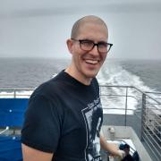
Glenn is on hiatus, reading and writing.
He started his career working with supercomputers at the National Institute for Computational Sciences at Oak Ridge National Lab, then went to Facebook to join Site Reliability Operations, where he received a baptism by fire as the single-point-of-failure oncall for the entire company.
Later, he wore many hats as a Production Engineer - first in FB's DevInfra org, working on everything from physical device testing for mobile phones...

Rich has had the fortune to work for great organizations and with even better people throughout his career. He was an early-adopter of DevOps recognizing the opportunity to move Ops out from under just being a cost-center to a key contributor to help companies accelerate business objectives. A majority of his career has been building data-driven DevOps teams for SaaS in the online advertising space (Nativo, Fox, MySpace), but also has held roles within Corporate IT (Nestle and EMC...
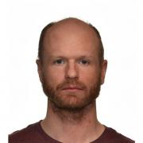
Tomas is a Staff Software Engineer at Tigera, working as a founding developer of the Calico eBPF dataplane. Before joining Tigera in 2019, worked as an engineer in network storage and network observability domains. He worked as a researcher at Vrije Universiteit Amsterdam in Andy Tanenbaum's group and obtained PhD by defending thesis "On the Design of Reliable and Scalable Networked Systems".
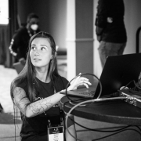
Natalia Reka Ivanko is a Security Product Lead with a strong background in container and cloud native security. She is passionate about building things that matter and working with site reliability and software engineers to develop and apply security best practices. She is inclined towards innovative technologies like eBPF and Kubernetes, loves being hands on, and is always looking for new challenges and growth. She is a big believer in open source and automation. In her free time she loves...
Rylie is a Software Engineer with Civic Eagle and a Maintainer of Open States, where they aim to improve civic engagement at the state and federal level by providing data and tools regarding those legislatures.
Hello! I am Amit, a Senior Developer Advocate at Retool. Prior to joining Retool, I spent five years at Amazon, helping developers build voice skills for Alexa. By day you can find me cooking up Retool apps to solve my everyday problems. By night, when I am not doing dad duties or cooking up code, I like catching up on the reruns of Seinfeld. Self-proclaimed Lego, and Instant Pot recipe nerd.
Noah Kantrowitz is a web developer turned infrastructure automation enthusiast, and all around engineering rabble-rouser. By day he runs infrastructure at Geomagical/IKEA and by night he makes candy and stickers. He is an active member of the DevOps community, and enjoys merge commits, cat pictures, and beards.

Jonathan Katz is a Principal Product Manager Technical at AWS for Amazon RDS. Prior to this, he was the VP of Platform Engineering at Crunchy Data, focused on managing PGO, an open source Postgres Operator.
Jonathan is a member of the PostgreSQL Core Team and involved in various governance aspects of the PostgreSQL Global Development Group. He serves as a Secretary and Director of the nonprofit PostgreSQL Community Association of Canada and is a Director of the nonprofit United States...
Mel is a Developer Advocate at Buildkite and has spent the past decade delivering software, either as a Software Developer, Production Coordinator or Project Manager. She loves developer communities and bringing people together to learn, has organised and emceed numerous RubyConfs in Australia, and most recently launched Buildkite's own developer conference; Unblock. When she's not clickity clacking, she's patting dogs, eating strawberries, learning German and watching Nordic...
Kohsuke Kawaguchi is the creator of Jenkins and co-CEO of Launchable. He is a well-respected developer and popular speaker at industry and Jenkins community events. Kawaguchi’s sensibilities in creating Jenkins and his deep understanding of how to translate its capabilities into usable software have also had a major impact on CloudBees’ strategy as a company, where he served as CTO. Before joining CloudBees, Kawaguchi was with Sun Microsystems and Oracle, where he worked on a variety of...
My name is Igor Khokhriakov. I am a Scientific Software Developer in San Diego Supercomputer Center, University of California San Diego (UCSD), USA. Main field of interest and responsibility design and implement Kubernetes platform to integrate computed structured models from AplhaFold and others into rcsb.org search engine.
Previously I worked as a scientist at Helmholtz-Zentrum Hereon (ex. Helmholtz-Zentrum Geesthacht) effectively I was involved mainly in Scientific Software...
I'm a student who loves everything from Robotics, Quantum Computing, to making music. I'm an aspiring materials engineer.

Bob is a Program Manager at the Google Open Source Programs Office with a focus on Cloud Native computing. He serves the Kubernetes project as a Steering Committee member and chair of the Contributor Experience Special Interest Group and has been involved in many other cross-cutting areas of the project. Bob comes from an academic background, spending 15 years at the University of Michigan with a later focus on computational research. As a Cloud Native Computing Foundation Ambassador, Bob...
__q_itok=__z-_z-E.jpg)
Bryna is a tech industry leader passionate about bringing people together and creating a more positive work environment in technology. As the COO and Co-Founder of STAAJ Solutions, she leverages her Agile TechOps knowledge to bridge gaps, inspire change, and provide lean operations to businesses in their crucial early stages.
Bryna helped shape the tech landscape in Southern California as Co-Founder...

Julia has seen things, and built things! Sounds ominous right? She started in Networking early in her career, and drifted through building data centers, hardcore systems engineering, and eventually the automation of the data center infrastructure! She is a Senior Principal Software Engineer at Red Hat, and serves on the Board of Directors of the OpenInfra Foundation. When she is not in meetings, she can sometimes be found working on the Ironic Project, which helps facilitate Bare Metal as a...
Christian is the technical lead of the Zeek project. He works at Corelight. Prior to that he spent 5 years building and leading the networking group at Lastline, and 5 years as a staff research scientist at the International Computer Science Institute. He served on the advisory board of the Open Information Security Foundation, and holds a PhD from the University of Cambridge. He has a major crush on open-source software and has used Linux as his main OS since kernel 2.0.28.

Bradley M. Kuhn is the Policy Fellow and Hacker-in-Residence at Software Freedom Conservancy (SFC). Kuhn began volunteering in the software freedom movement in 1992 — as an early adopter of Linux and contributor to many FOSS projects including Perl. As Free Software Foundation (FSF)'s Executive Director from 2001-2005, Kuhn led FSF’s GPL enforcement and invented the Affero GPL. Kuhn was SFC’s primary volunteer from 2006–2010 and its first...

Vibhor Kumar is a principal system engineer at EnterpriseDB. He joined the company in 2008 to work with Postgres after having worked with Oracle systems for three years. His experience includes team leadership roles at IBM Global Services and BMC Software and some years as an Oracle database administrator at CMC Ltd. He earned his bachelor’s degree in computer science at the University of Lucknow and his master’s degree in computer science at the Army Institute of Management, Kolkata.

James Kunstle is a software engineer in Red Hat's Open Source Program Office. James finished his graduate work at BU in AI, having finished collaborative research with Red Hat in the adversarial machine learning space. He works on the oss-aspen project and oss-aspen/8Knot, and is based in Boston.
Yarden Laifenfeld is a Software Engineer at Rookout. With a deep background in C and embedded Linux environments, you can find her in the office jumping between 6 different programming languages a day. When she’s not busy developing new features and helping out clients, she loves learning about new technology, creating iOS apps and making everything she can automated.

Intending to become a programmer, Dustin got sidetracked and spent more time than he cares to admit doing theoretical physics and mathematics with no relevance to software. He's better now.
Some little-known facts about Dustin Laurence:
He first used a computer playing Colossal Cave Adventure and the
bootleg Fortran IV version of Zork over a glass teletype and an
acoustic modem.
His first good programming language was C. He lies and...

I love Coding, I grew up in a small town in Chile and one weekend, 16 years ago, I had the flu and could not go out. I decided to learn how to code in Python and that was the beginning of the road that would moved us all to the Northern California so that I could join the Production Engineering team at Instagram. Also like eating, drinking and cooking (in that order).
I'm a nerd, and proud of it! I love solving problems and technology is the best way to do that. I work professionally as a Developer Advocate for Camunda. On the side I'm a husband, father, collector of hobbies, gardener, and outdoorsman (hiking, camping, canoeing/kayaking). I enjoy working analog, with my hands, whenever possible. I hate chores and cleaning up after myself.
Senior Platform TAM at Red Hat
I am a #RedHatAccelerator
Passions: Privacy, Security & Hardware, Raspberry Pi, Steam Deck, & 3D printing.

Federico Lucifredi is the Product Management Director for Ceph Storage at Red Hat and a co-author of O'Reilly's "Peccary Book" on AWS System Administration. Previously, he was the Ubuntu Server product manager at Canonical, where he oversaw a broad portfolio and the rise of Ubuntu Server to the rank of most popular OS on Amazon AWS. A software engineer-turned-manager at the Novell corporation, he was part of the SUSE Linux team, overseeing the update lifecycle and...
Cedrick leads Developer Relations at Datastax. He is a passionate Java developer who keeps implementing applications to demo anything but also lately tools like CLI and SDKs. In 2013 he created the open-source feature toggle library called FF4J which he has been actively maintaining. He runs weekly technical live workshops on youtube.
With almost 20 years in the industry as a tech leach, solution architect, or presales he can discuss a wide range of technologies and distributed...
Denis is a software developer, architect and entrepreneur with several decades of deep PostgreSQL experience.
Denis co-founded EnterpriseDB (EDB), one of the leading commercial Postgres companies, and served as CTO for the company’s first five years. During this time EDB became a big supporter of the Postgres community, and he and the company developed or supported the development of many enterprise class features in Postgres.
Subsequently Denis was founder and CEO of OpenSCG...
Alex Lynd is a 19 year old hardware developer and cybersecurity content creator who appears on shows like Hak5, where he creates ethical hacking tutorials & InfoSec related content. Alex researches / specializes in Signals Intelligence, and uses microcontrollers to showcase low-cost hacks. He has a passion for sustainability, hardware hacking, and open-source; and he creates content across multiple platforms to document his journey & projects in hopes of inspiring other young makers...
Stefano is an experienced leader of open source organizations, from non-profits advocacy groups and trade organizations to business ventures and community projects across countries. With a proven track record in community building, he’s also an active contributor to open source projects. When not basking in front of a monitor, you’ll find him teaching sailing or perfecting his pizza technique.
Timothy Mamo loves to help growing companies make the most of the cloud by focusing on Cloud Native technologies and processes. He’s had a varied experience, from studying aerospace engineering and working in the automotive industry before moving into the world of Cloud and becoming a Developer Advocate for DigitalOcean. He enjoys working and helping others improve and understand, at times with some Mediterranean gusto.
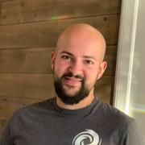
Paul’s been in the IT security industry for over a decade. More recently he’s helped organizations large and small to move their workloads securely to public cloud environments. Today, he's working with FireTail.io, a company whose mission is to help make APIs more secure by giving developers the tools necessary to design bulletproof APIs. He’s also a fan of sailing, gardening, and house music.

Don Marti has written for Linux Weekly News, Linux Journal, and other publications. Don co-founded the Linux and web consulting firm Electric Lichen, which he and business partner Jim Gleason later sold to VA Linux Systems. Don has served as president and vice president of the Silicon Valley Linux Users Group and on the program committees for Uselinux, Codecon, and LinuxWorld Conference and Expo. He was a key organizer for Windows Refund Day, Burn All GIFs Day, FreedomHEC, and the movement...

Bronwyn Mauldin oversees a Research and Evaluation team that utilizes data and social science methods to improve the LA County Department of Arts & Culture's work to increase equity and inclusion through the arts. Bronwyn has spent her career conducting applied research and evaluation for nonprofits, philanthropies and government. She also teaches research methods to master's students in the arts administration program at Claremont Graduate University. Across her career in...
Patrick McLean has been a part of the Linux community since the 90s, a Gentoo Developer since 2006, and is currently is a Staff Release Engineer at Sony PlayStation Cloud Gaming Engineering and Infrastructure department. He works on packaging, configuration management, internal tools, and low level debugging at PlayStation.
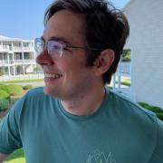
James is a lifelong learner, practitioner, and teacher of technical topics, focused on product delivery on Kubernetes. He has enabled teams large and small to deliver new products and platforms amidst challenging business and technical environments.

Sage is a security analyst at Red Hat, focusing on storage security, both for containers and for distributed systems. They did a master's degree at UCSC, and have an undergraduate degree in math and computer science from Umass Amherst. In their free time, they enjoy hiking with their dog.
Heather Meeker is a General Partner at OSS Capital, an early stage venture capital fund specializing in commercial open source development. She is also a partner at Tech Law Partners, LLP, a law firm focused on technology transactions.
She is an internationally-known specialist in open source software licensing. She is the primary drafter of many widely-used licenses, including Elastic 2.0, and served on the core drafting team for Mozilla Public License 2.0 and the PolyForm licenses...
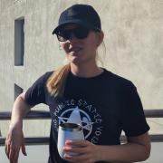
Olga Merkulova is a solutions analyst and founder of the IK Company. She started as a Java developer back in 2007. After 4 years in the big international companies she realized she is also keen on analysis and requirements capture. Olga ended up founding an IT consulting company in 2016 and working as a solutions analyst optimizing processes, writing prototypes and proof of the concepts for laboratories in the big EU research facilities such as ESFR, DESY.
She is an open-source...
Jay is a Senior Cloud Advocate at Microsoft, based in San Diego, Ca. A multipotentialite, Jay enjoys finding unique ways to merge his fascination with productivity, automation, and development to create tools and content to serve the tech community.
Bruce Momjian is co-founder and core team member of the PostgreSQL Global Development Group, and has worked on PostgreSQL since 1996. He has been employed by EDB since 2006. He has spoken at many international open-source conferences and is the author of PostgreSQL: Introduction and Concepts, published by Addison-Wesley. Prior to his involvement with PostgreSQL, Bruce worked as a consultant, developing custom database applications for some of the world's largest law firms. As an...
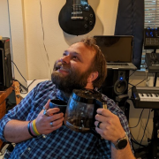
I'm a recovering Music Education major that's currently working as a SysAdmin for University of California. Been a Fedora user since Fedora 12 and an Ambassador since Fedora 15. I've been a Fedora Jam (Pro Audio focused spin) contributor since it's conception, and I own way too many guitars.

Nicholas Morey is a Platform Engineer with a passion for DevOps practices. He is on the team at Akuity as a Developer Advocate, talking with the community about anything Argo Project related. He is an experienced Argo CD operator and a Certified Kubernetes Administrator.
I was inspired to join Civic Eagle by the founders’ commitment to the mission of improving participation in democracy and by the perseverance and tenacity they demonstrated in overcoming obstacles to that mission. At Civic Eagle, we help the people who connect directly with communities translate a desire for a better world into public policy. These folks are often strapped for time and resources, so our data automation and collaboration tools make their biggest impact at that “grasstops”...
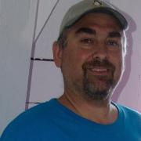
I am a Linux Systems Administrator, I've been a user of GNU/Linux for my
own personal use since the late nineties. I've used many distributions over
the years, starting with Slackware, up to the latest Red Hat and Ubuntu
releases.
Lukonde is a Senior Developer Advocate at AWS and a HashiCorp Ambassador. He has years of experience in application development, solution architecture, cloud engineering, and DevOps workflows. He is a life-long learner and is passionate about sharing knowledge through various mediums. Nowadays, Lukonde spends the majority of his time contributing to the cloud-native ecosystem.
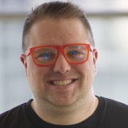
Dan is a Staff Site Reliability Engineer @ Reddit. He started his career as a high school teacher and transitioned into a System Administrator. He enjoys creative collaboration to solve solvable things, and using automation for everything else.
Doug Ortiz is a technologist with experience in Architecting, Developing, Migrating, Modernizing applications between on-premise to/from platforms involving technologies such as: AWS, Azure, GCP, IaaC, Big Data, Data Analytics, DevOps, Linux, Kubernetes, Docker, Terraform, Ansible, Python, Scala, GoLang, GraphQL, .Net, along with database technologies of the likes: PostgreSQL, Neo4J, MySQL, and SQL Server.
Strengths: Multi-Cloud Experience, Software Architecture and Development,...

Alan started programming when he was four years old on his dad's Commodore 64 and began using Linux in the mid-90s while in high school. He currently works for SoftIron, a Silicon Valley startup making the world's finest appliances for the data center, including scale-out storage hardware running Ceph. Alan is the creator and maintainer of M-Stack, a free and open source USB device stack for PIC micocontrollers, and HIDAPI, a cross-platform host-side USB HID library; and is a...
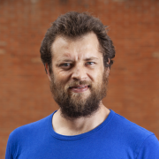
Nerd, cyclist, and blogger. Jônatas is a pair programming evangelist. Vim editor user and enthusiast. Postgresql user since 2004.

Christophe has been working with PostgreSQL since 1997. He is the CEO of PostgreSQL Experts, Inc.
People person, technology enthusiast and all-things-open evangelist. I have managed and marketed communities for more than a decade, getting started in the KDE community, followed by working as openSUSE Community Manager at SUSE and co-founded Nextcloud. At Nextcloud I head up our marketing efforts, writing, speaking at and organizing...
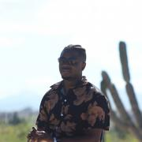
Paak graduated from Syracuse University in 2018 with a Bachelor's Degree in Computer Science. He is currently a Software Engineer with Pluto TV working on the Platform Reliability Operations team and brings 5 years of experience building out large scale tools and services. Building out Pluto TV's internal observability suite has been an ongoing priority and Paak has made a significant contribution to this initiative using a variety of tools and design patterns. Paak enjoys...
Mofizur Rahman (@moficodes) is a Developer Advocate at Google. His area of interests include container orchestration, micro services and observability. His favorite programming language these days is Go. He also tinkers with Node, Python and Java. He is also learning and teaching in the Go, Kubernetes, Docker and Microservice community. He is a strong believer of the power of open source and importance of giving back to the community. He is a self proclaimed sticker collecting addict and has...

Kyle Rankin is a security and infrastructure expert with over two decades of professional Linux experience. He is the author of How To Write A Tech Book, The Best of Hack and /: Linux Admin Crash Course, Linux Hardening in Hostile Networks, DevOps Troubleshooting, The Official Ubuntu Server Book, Third Edition, Knoppix Hacks, 2nd Edition, and Ubuntu Hacks, among other books. Rankin was an award-winning columnist and tech editor for Linux Journal, and speaks frequently on Free and Open Source...
Priyanka “Pinky” Ravi is a Developer Experience Engineer at Weaveworks. She has worked on a multitude of topics including front end development, UI automation for testing and API development. Previously she was a software developer at State Farm where she was on the delivery engineering team working on GitOps enablement. She was instrumental in the multi- tenancy migration to utilize Flux for an internal Kubernetes offering.
Vignesh is an Engineering Manager at Cloudflare responsible for Cloudflare's mission-critical databases.
He manages a team of database engineers across the world. Vignesh also built high availability on Postgres across multiple data centers and contributed to Postgres, stolon, and other open-source projects. He is the creator of spinup.host
I have been active in Open Source and DevOps communities for over two decades and have spoken at and helped organize many conferences and meetups. I previously presented at SCALE 10x and 12x. Prior to joining Kubecost, I held customer, community, and partner-facing roles with several open source companies. I've worked in and with enterprises and startups across a wide variety of industries including banking, retail, and government. I currently live in Sydney, Australia after relocating...
Justin Reock is the Deputy CTO at DX (getdx.com), and is an outspoken speaker, writer, and software practice evangelist. He has over 20 years of experience working in various software roles and has delivered enterprise solutions, technical leadership, and community education on a range of topics. After a fifteen year career in software development, Justin now focuses on helping businesses create better throughput by optimizing the developer experience. Much of his work can be found online...
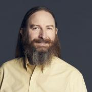
Rob Richardson is a software craftsman building web properties in ASP.NET and Node, React and Vue. He’s a Microsoft MVP, published author, frequent speaker at conferences, user groups, and community events, and a diligent teacher and student of high quality software development. You can find this and other talks on his blog at https://robrich.org/presentations and follow him on twitter at @rob_rich.
Been working with Oracle/MySQL for many years as DBA. Have done DR setup with MySQL InnoDB Cluster and Source-Target replication. Have presented in many Quest Oracle Community user group conferences.
Brian is a Product Manager on Google’s Open Source Security Team. He focuses on software supply chain security and is actively involved in the OpenSSF Scorecards project. In his spare time, Brian enjoys 3D printing and Atari video game programming.
Andrew has been a Production Engineer at Meta since 2009. Before that, he held a variety of roles in software development and system administration.
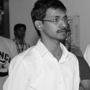
Vijay Samuel works with eBay's observability platform as its architect. During his time at eBay Vijay has transformed eBay's observability platform into a cloud native offering that is primarily built on top of open source technologies. He loves to code in Go and play video games.
Shayon Sanyal is a Principal Database Specialist Solutions Architect for RDS/Aurora PostgreSQL based out of New York and has been with AWS since December 2017. Shayon has overall 12+ years experience in IT Consulting, Delivery, Pre-Sales and Professional Services in IT Infrastructure, IaaS, Database and Cloud domains. His day job allows him to help AWS customers design scalable, secure, performant and robust database architectures on the cloud. Outside work, you can find him hiking,...
Rizel is a Junior Developer Advocate at GitHub. She moonlights as an advisor at G{Code} House, an organization aimed at teaching women of color and non-binary people of color to code. Rizel believes in leveraging vulnerability, honesty, and kindness as means to educate early-career developers.
Editor, DITA architect, photographer, and all-around nerd.
Alolita Sharma is co-chair of the Cloud Native Computing Foundation (CNCF) Technical Advisory Group (TAG) for Observability, member of the OpenTelemetry Governance Committee and a board director of the Unicode Consortium. She contributes to open standards and open source at OpenTelemetry, Unicode and W3C. She has served on the boards of the OSI and SFLC.in. Alolita has led engineering teams at Wikipedia, Twitter, PayPal, IBM and AWS. Two decades of doing open source continue to inspire her...

Jeffrey (@jeefy) is a Principal Developer Experience Engineer at the CNCF, with a focus on improving community and project automation. Before that, he’s worked at Red Hat and the University of Michigan focusing on Cloud Native technologies and CICD patterns. Jeffrey has been a contributor to upstream Kubernetes, helping in SIG-Contribex, SIG-Release, and SIG-UI. He passionately advocates for open source development and recognizing and alleviating burnout.

Eduardo is an entrepreneur and software engineer. He is currently one of the Fluentd project maintainers and creator of Fluent Bit, a lightweight Logs and Metrics processor. He also is the founder of Calyptia (the Fluent company).
I am an OSHW advocate and the founder of Mach 30, a US non-profit dedicated to developing OSHW for spaceflight. I was the lead developer for the Shepard Test Stand (OSHW Certificate US000006, http://opendesignengine.net/projects/shepard-ts), an open source Estes rocket motor test stand to support educational and outreach activities. I have also presented at the 2012, 2013, and 2015 OSHW Summits where I covered topics ranging from...
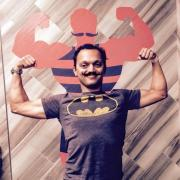
Naveen is a contributor and maintainer of multiple OpenSSF projects, a member and contributor to the Sigstore org, and a contributor to the SLSA code base.
His contributions have earned him recognition with Google Peer Bonus awards in ...

Many years ago amongst the snow drifts and tundra of the great frozen north, Michael Starch earned his Bachelor’s degree in Computer Engineering from the University of Michigan. Leaving his beloved homeland behind, he started a career at NASA's Jet Propulsion Laboratory in sunny Pasadena. He has remained there ever since working as a developer, operator, engineer, and open source community manager on a myriad of projects and missions. He also mentors at San Marino High School on Fridays....
I’m Zoe Steinkamp, a Developer Advocate at ClickHouse, with a strong foundation in front-end software engineering. My mission is to empower developers by enhancing their experience with ClickHouse’s high-performance database and real-time analytics capabilities. I also have a growing interest in data science. In my spare time, I love to travel and tend to my garden. Let’s connect on LinkedIn—I’m eager to exchange insights and knowledge at both virtual and in-person events.
Aeris manages community outreach and engagement at Humanitec and PlatformEngineering.org. They also serve as a co-organizer for PlatformCon, the first ever conference by and for platform engineers, and is a content curator for Platform Weekly, a community-driven email newsletter about all topics platform engineering and cloud native.

Dave Stokes is an open-source software and database fan. He has worked at companies ranging alphabetically from the American Heart Association to Xerox, has three college degrees, enjoys riding his Honda Goldwing motorcycle, lives in North Texas, and started with UNIX in the Version 7 days. He is the author of MySQL & JSON - A Practical Programming Guide, which is available at Amazon.com
Fatima is a graduate of the University of Waterloo, Canada. Post graduation, she's worked full-time as a Software Developer at DRW, a trading firm, and currently works at Yelp as a Senior Software Engineer.

Chunxu Tang is a Staff Research Scientist at Alluxio and a committer of PrestoDB. Prior to Alluxio, he served as a Senior Software Engineer in Twitter’s data platform team, where he gained extensive experience with a wide range of data systems, including Presto, Zeppelin, BigQuery, and Druid. He received his Ph.D. in computer engineering from Syracuse University, where he conducted research on distributed collaboration systems and machine learning applications.
Kathryn manages the business of Infrastructure at Shopify, leading the Engineering Operations group. Driving Black Friday Cyber Monday (BFCM) readiness, large complex programs, cloud costs, and partner relationships, we set the foundation for Shopify Infrastructure teams to build the best technology at scale. With a background in business management, wind engineering consulting, analytics, business transformation, and investing, she thinks holistically about risk management.
I have over 15 years of experience leading Technical Operations teams with some of the most respected companies in streaming media, finance, and security technology. In 2021, I joined Transposit as Head of Product to provide thought leadership and strategy to build a product that fulfills the needs of our customers, employees, partners and rewards our stakeholders. I am an Ex-Hulugan, Director of Production Operations. My teams maximized uptime/availability for our Live and Video on Demand...
__q_itok=f4vdMmCX.jpg)
Alkin Tezuysal is the Director of Services at Altinity Inc. He has extensive experience in open-source relational databases, working in various sectors and large functions. With over three decades of industry experience, he has led global operations teams for MySQL customers and users. He's a known speaker at worldwide open-source database events.
His recent achievements extend into open-source communities: He was awarded Most Influential in Database Community 2022 by The Redgate...
Taylor Thomas is an Engineering Director working on WebAssembly platforms at Cosmonic. He actively participates in the open source community and is one of the creators of Krustlet and Bindle. He is currently core maintainer of wasmCloud, Bindle, and Krustlet. He is a regular speaker at various open source conferences and meetups, including various KubeCons and local meetup groups. His work at Intel, Nike, and Microsoft spanned various containers and Kubernetes platforms as well as...
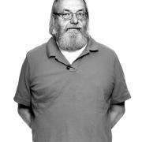
Ken Thompson is an American pioneer of computer science. Thompson worked at Bell Labs for most of his career where he designed and implemented the original Unix operating system. Later at Google, Thompson co-developed the Go programming language.
Brooks is a Lead Software Engineer at Cosmonic, focusing on harnessing WebAssembly to alleviate the pains of modern software development. Brooks started his software development career with Critical Stack, a Kubernetes container orchestration platform that is now open source. He joined Cosmonic to focus on bringing WebAssembly and wasmCloud to the Cloud Native world full-time. He is a proud Rustacean and an advocate of all-things open source.
Chris Travers has over twenty years of experience working with PostgreSQL as an application developer, database administrator and engineer, and IT manager. He has worked with (and overseen teams which worked with) petabyte-scale implementations of PostgreSQL often replacing technologies like Elastic Search when scalability limits were reached there.
At Adjust, Chris oversaw teams supporting the infrastructure and data management platforms that supported 700k requests a second and...
Working on database-backed, internet-based systems for over a decade, Robert is a published author and long-time open source contributor, having been recognized as a major contributor to the PostgreSQL project for his work over the years. An international speaker on databases, open source, and managing web operations at scale, he occasionally blogs at https://xzilla.net.
Margaret Tucker is a Policy Manager at GitHub working on issues including intermediary liability, copyright, and open source security policy. Margaret is passionate about advocating for developers' interests to policymakers and hearing from developers about what policy issues matter to them. Prior to joining GitHub, Margaret was a Policy Fellow serving the Office of Science and Technology Policy and also worked as a Research Associate for Future Tense, a section of Slate covering the...
Matt is a software engineer at Tetrate, working on Istio-related products, and loves sharing the latest tech and trends with everyone. He's been doing Dev, sometimes with added Ops, for over a decade. His idea of "full-stack" is Linux, Kubernetes, and now Istio too. He's given many talks and workshops on Kubernetes and Istio, and is co-organiser of the Service Mesh London meetup. He tweets @mt165 and blogs at https://mt165.co.uk
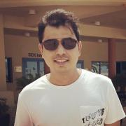
Muhammad Usama is major contributor and committer for the Pgpool-II open-source project and has contributed to many performances and high availability-related features. He has 20 years of professional software development experience and has been involved with PostgreSQL since 2006.
Before coming to open source development, Usama was doing software design and development with the main focus on system-level embedded development. After joining EnterpriseDB in 2006, he started his career...
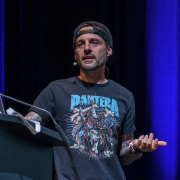
Nicolas is an experienced hands-on technologist, evangelist and product owner who has been working in the fields of Cloud-Native technologies, Open Source Software, Virtualization and Datacenter networking for the past 18 years.
Passionate about enabling users and building cool tech solving real-life problems, you'll often see him speaking at global tech conferences and online events, spreading the word and walking the walk with customers and users.
Mandi Walls is a DevOps Advocate at PagerDuty. For PagerDuty, she helps technology organizations increase their effectiveness with modern IT practices and unplanned incidents. She is a regular speaker at technical conferences when she isn’t podcasting, streaming, or writing about PagerDuty. She is interested in the emergence of new tools and workflows to make the task of operating large complex computing systems more approachable.
Dr. Beinan Wang is a Senior Staff Engineer from Alluxio and is the committer of PrestoDB. Prior to Alluxio, he was the Tech Lead of the Presto team in Twitter and he built large scale distributed SQL systems for Twitter’s data platform. He has twelve-year experience of working on performance optimization, distributed caching, and volume data processing. He received his PhD in computer engineering from Syracuse University on the symbolic model checking and runtime verification of...

John Willis has worked in the IT management for over 40 years. He is researching DevOps, DevSecOps, IT risk, modern governance, and audit compliance. Previously, he was an Evangelist at Docker Inc., VP of Solutions for Socketplane (sold to Docker) and Enstratius (sold to Dell), and VP of Training & Services at Opscode, where he formalized the training, evangelism, and professional services functions at the firm. Additionally, Willis founded Gulf Breeze Software, an award-winning IBM...

Mark Wong is a Software Development Engineer at EDB and is a PostgreSQL Major Contributor. He first introduced himself to the PostgreSQL community in 2003 with open source benchmarking kits and performance data. Since then, he has continued to contribute to various aspects of the community such as a Google Summer of Code mentor, Conference Organizer, Portland PostgreSQL Users Group Co-Organizer, PostgreSQL Fundraising Group Member, and a Director on the Board of the United States PostgreSQL...
Susan is an Outbound Product Manager at Google Cloud. She previously led product and technical marketing roles at Sun/Oracle, Canonical, Docker, Citrix, Midokura (SDN startup now part of Sony Group), VMware NSX and Tanzu Service Mesh. She is a frequent speaker at conferences such as OSCON, Open Source Summit, Container World, Interop, Open Networking and Edge Summit and VMworld. Follow Susan on Twitter @susanwu88 and on Github.com/susanwu88
Dr. Kitty Yeung is a physicist, engineer and artist, in addition to her role leading incubation projects at Microsoft. To drive integration between science and art, she also founded a sustainable and STEAM fashion brand, Art by Physicist, and founded the fashion-tech initiative at Microsoft. Prior, Kitty worked as a Senior Quantum Architect at Microsoft Quantum, Manager and Creative Technologist of the Bay Area Microsoft Garage Program; UX Designer at Intel Maker Group; Research Scientist...
Peter Zaitsev is an entrepreneur and co-founder of Percona. As one of the foremost experts on Open Source strategy and database optimization, Peter leveraged both his technical vision and entrepreneurial skills to grow Percona from a two-person shop to one of the most respected open source companies in the business with staff members more than 350. Now Peter continues as a Board Member & Advisor in a range of open source startups. Peter is a co-author of High Performance MySQL:...
Eddie lives in Denver, CO with his wife and dog. He loves open source and works on the Kubernetes project. When not hacking on random things you'll most likely find him climbing rocks somewhere.

Anita Zhang is the software engineering manager of Meta's Linux Userspace team. Her team connects Meta's infrastructure with the open source community. She is active on the systemd project and continues to support systemd at Meta as part of their userspace efforts.
Andrew is a professional developer advocate at Mattermost where he creates resources to empower the open source community. After graduating from The University of Texas at Austin, he taught English abroad in Japan, learned to code between teaching classes, and later became the lead web developer for an e-learning company back home in the United States. A lifelong advocate of career and technical education, Andrew's passion is helping others unlock their true potential.